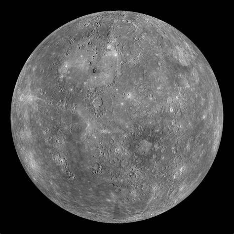
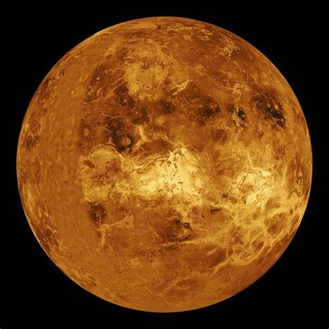
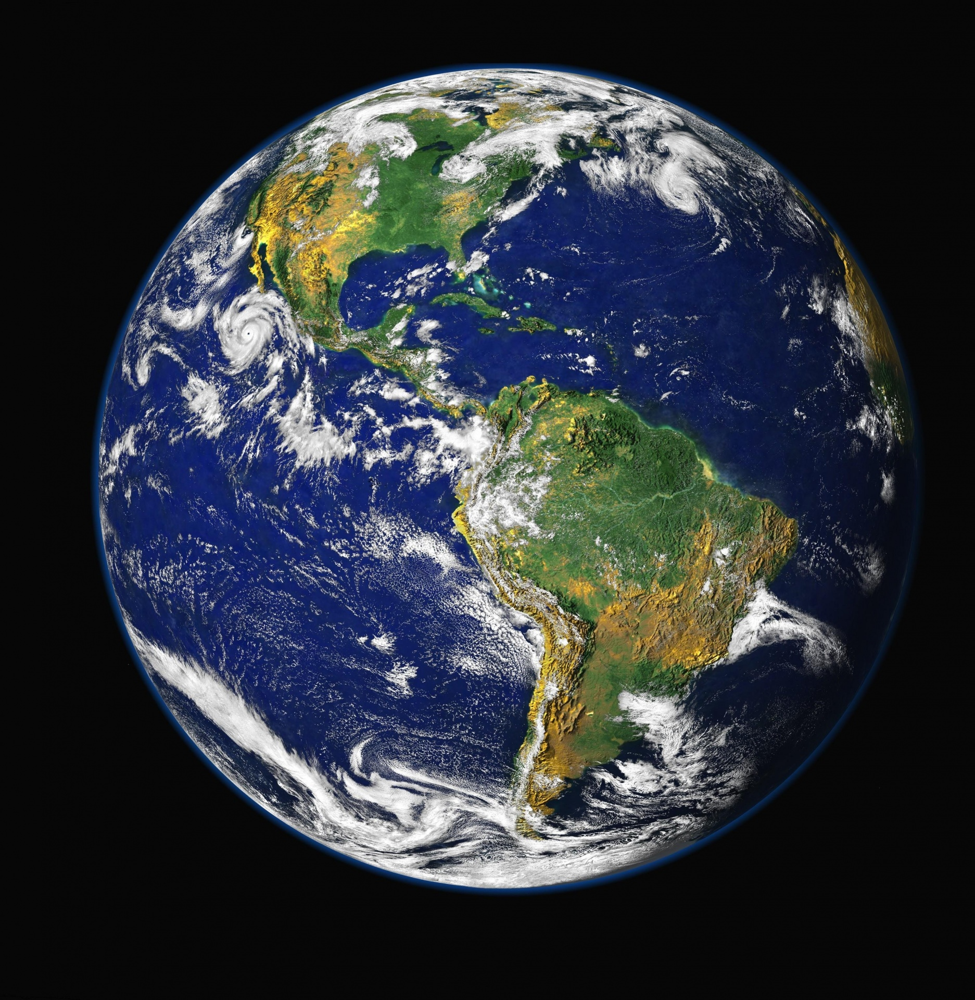
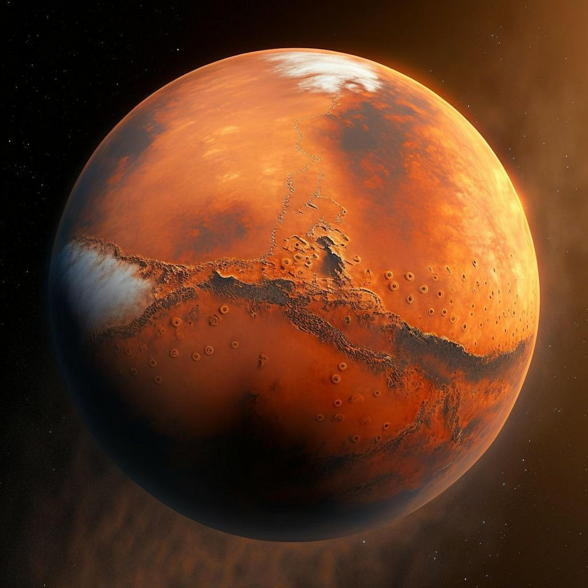
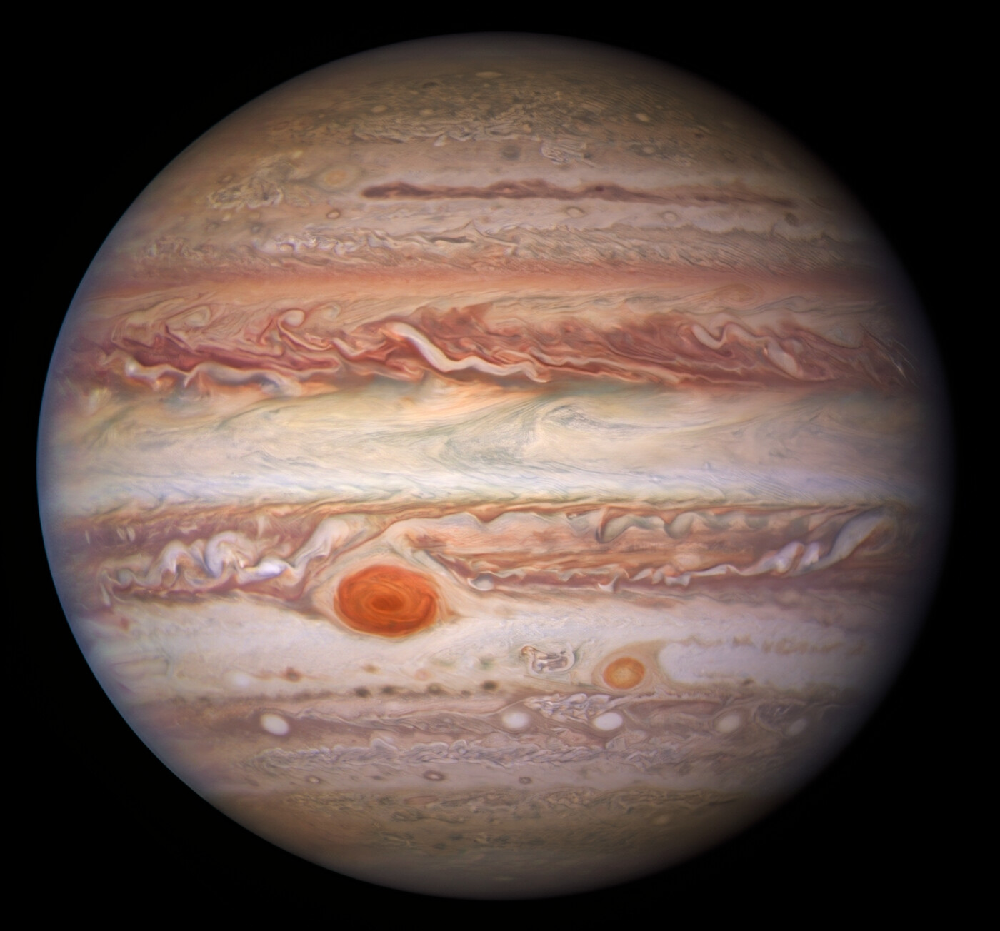
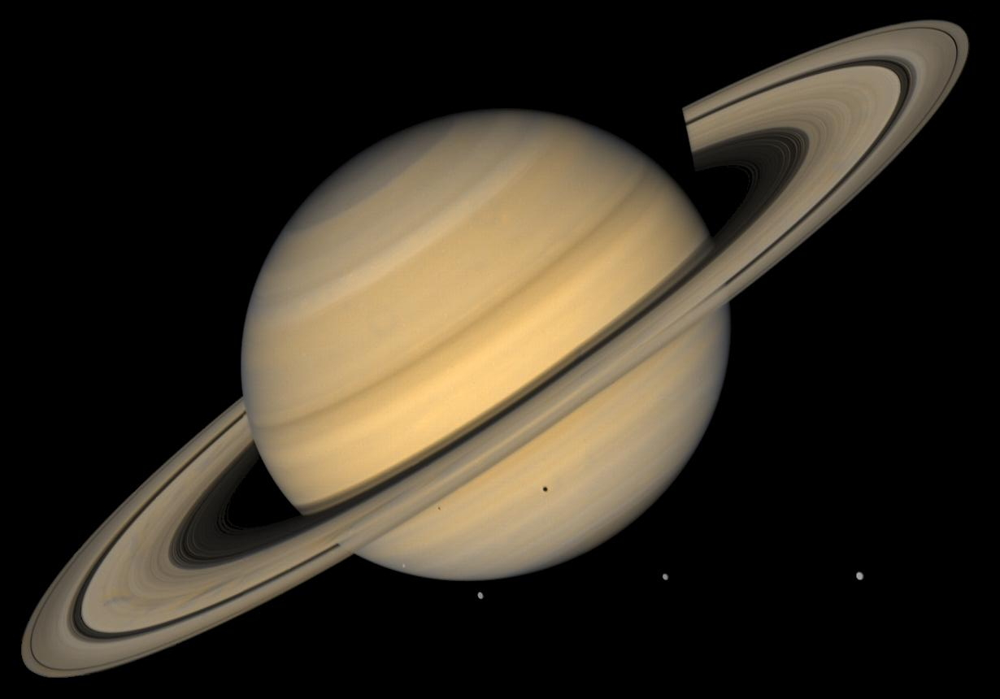
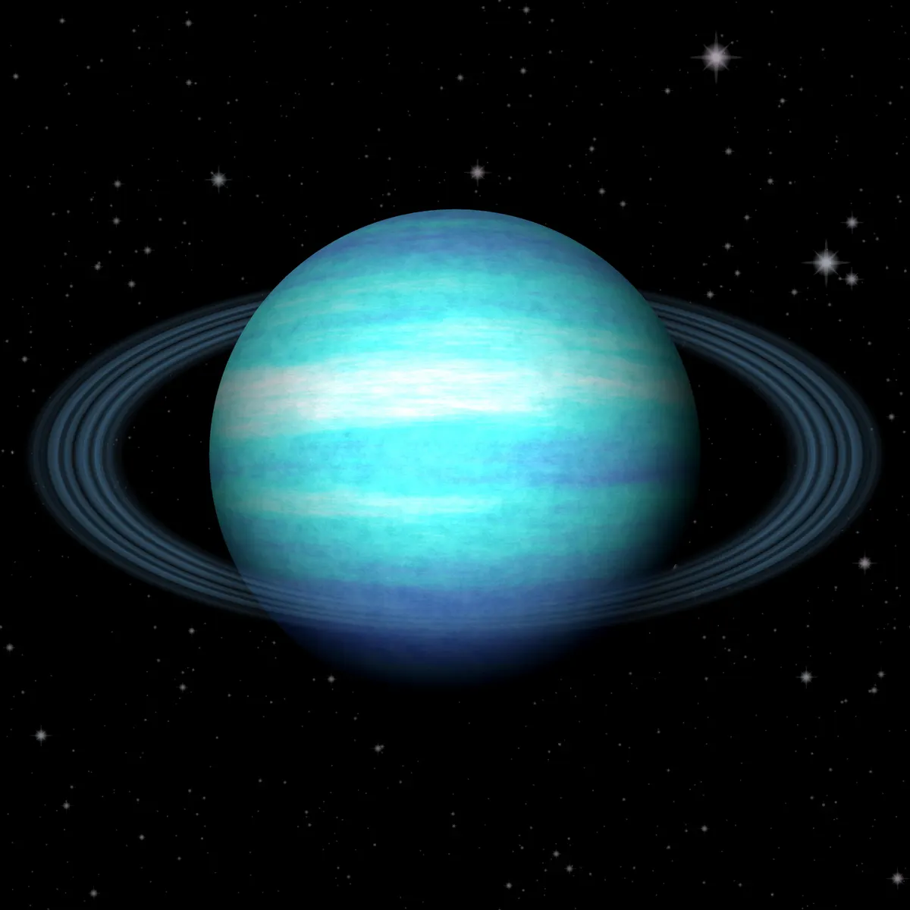
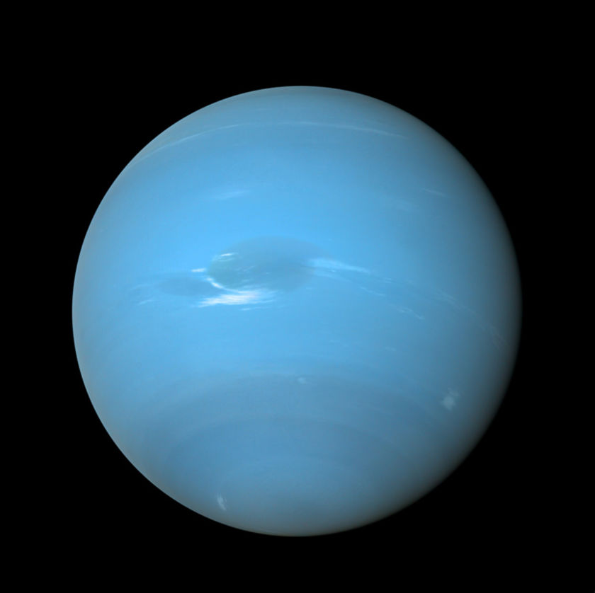

Mercury
Mercury is the smallest planet in our solar system, closest to the Sun, with extreme temperature variations, a thin atmosphere, and a rocky, cratered surface.

Venus
Venus is the second planet from the Sun, known for its thick, toxic atmosphere, extreme heat, volcanic surface, and retrograde rotation. It's Earth's sister planet.

Earth
Earth is the third planet from the Sun, the only known planet with life. It has a diverse climate, liquid water, and a protective atmosphere.

Mars
Mars is the fourth planet from the Sun, known for its red, rocky surface, massive volcanoes, and potential signs of past water. It's often called the "Red Planet."

Jupiter
Jupiter is the largest planet in our solar system, a gas giant with a thick atmosphere, famous for its Great Red Spot, strong magnetic field, and many moons.

Saturn
Saturn is the sixth planet from the Sun, known for its stunning ring system, composed of ice and rock, and its numerous moons, including Titan.

Uranus
Uranus is the seventh planet from the Sun, an ice giant with a blue-green color due to methane, a tilted rotation axis, and faint ring systems.

Neptune
Neptune is the eighth and farthest planet from the Sun, an ice giant with a deep blue color, strong winds, and a storm system known as the Great Dark Spot.